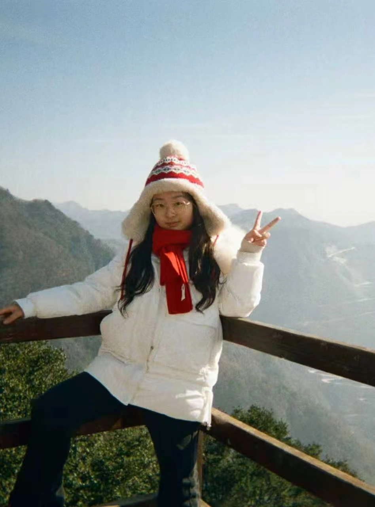

新东方教育科技集团（重庆）
新媒体视觉设计 / 内容设计实习生
围绕用户浏览路径优化内容层级，建立系列化视觉模板，并通过数据反馈持续迭代。支持50余篇内容上线，笔记平均互动率提升80%。

个人设计作品集 · 二〇二六
界面与交互 / 视觉传达
从用户研究到界面落地，我关注真实需求与细微感受。以清晰的信息、克制的视觉和自然的交互，构建兼具美感与实用性的设计。
浏览精选作品设计实践 · 2024—2026
从界面体验、品牌视觉到生成影像，
以不同媒介回应具体问题。
显示全部13件作品
从需求出发，建立自然的使用体验
2件作品让内容被看见，让文化被感知
3件作品建立清晰、一致的品牌语言
1件作品以镜头探索叙事，以影像表达想象
7件作品关于我
我是杨欣润，就读于成都大学视觉传达设计专业。我的实践横跨界面、交互与品牌视觉，希望把对人的理解，转化为清晰、细腻且有秩序的设计。
新媒体视觉设计 / 内容设计实习生
围绕用户浏览路径优化内容层级，建立系列化视觉模板，并通过数据反馈持续迭代。支持50余篇内容上线，笔记平均互动率提升80%。
视觉设计实习生
参与第三届旅发大会、《城市捉迷藏》等项目的数字端视觉、艺人海报及传播物料设计，完成多尺寸适配与视觉延展。
国家级一流本科专业
平均绩点
专业排名
雅思成绩
国家级设计竞赛奖项11项
未来设计师设计大赛国家一等奖×2、蓝桥杯视觉艺术设计赛国家二等奖等
靳埭强设计奖 · 白金创意设计奖
国家奖学金 · 校级一等奖学金×2
期待下一次有意义的连接
回到顶部 ↑